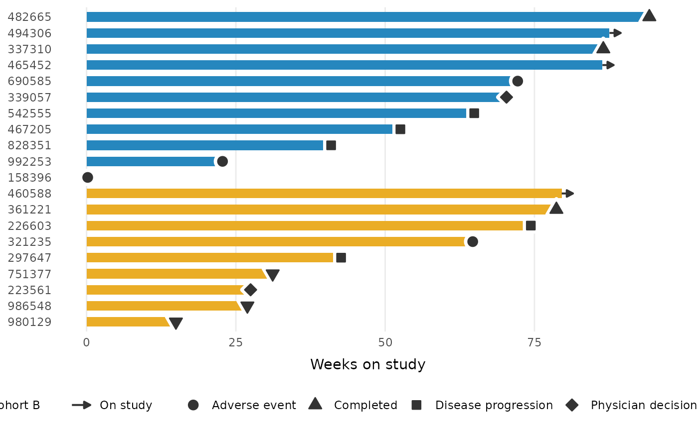

Draws a shaped point at the end of each lane indicating the subject's
status (e.g. reason off study), with a legend generated automatically from
the shape mapping. Subjects still on study (NA in status_var, or the
value of ongoing) are drawn as a rightward arrow with its own legend
entry.
Usage
geom_swimlane_status(
id_var,
duration_var,
status_var,
ongoing = "On study",
arrow = TRUE,
size = 2.8,
colour = "grey20",
fill = colour,
stroke = 0.75,
halo = "white",
...
)Arguments
- id_var
Column with the subject identifier, mapped to the y-axis.
- duration_var
Numeric column with the lane length, mapped to the x-axis.
- status_var
Column with the status label.
NAvalues are treated as ongoing.- ongoing
Legend label for ongoing subjects; also recognized as a value of
status_var.- arrow
If
TRUE(default), ongoing subjects get a rightward arrow with a separate legend entry. IfFALSE, theongoinglabel is treated as a regular status level in the shape legend.- size
Point size; the ongoing arrow is scaled to match.
- colour
Point color, used for both the outline and (by default) the fill of the glyph, and for the ongoing arrow.
- fill
Fill color for the solid glyphs (shapes 21-25). Defaults to
colour.- stroke
Outline width of the glyph.
- halo
Color of the ring drawn beneath each status glyph, separating it from the bar fill. Use
NAto disable (e.g. on dark backgrounds).- ...
Other arguments passed to the
ggplot2::geom_point()status layer.
Value
A list of ggplot2 layers (and, when arrow = TRUE, a scale that
creates the arrow's legend entry).
Examples
library(ggplot2)
patient_disposition |>
order_swimlane(subject, weeks_on_study, cohort) |>
ggplot() +
geom_swimlane(subject, weeks_on_study, cohort) +
geom_swimlane_status(subject, weeks_on_study, reason_off_study) +
labs(x = "Weeks on study") +
theme_swimlane()
